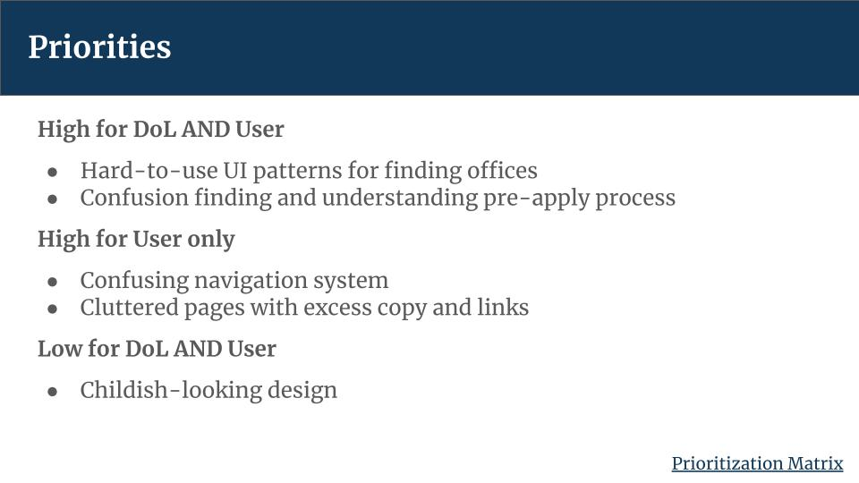
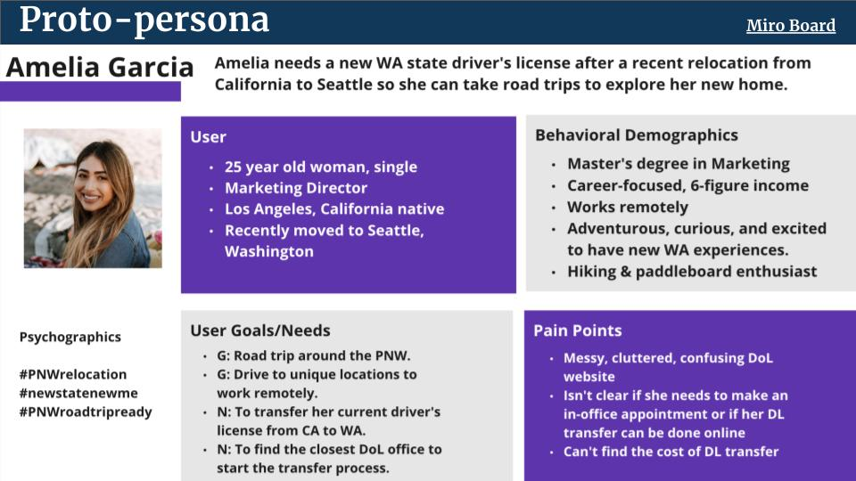
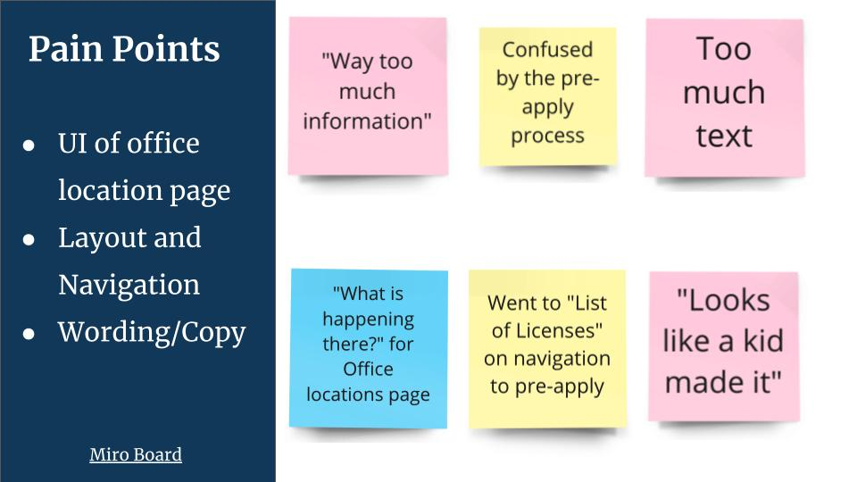
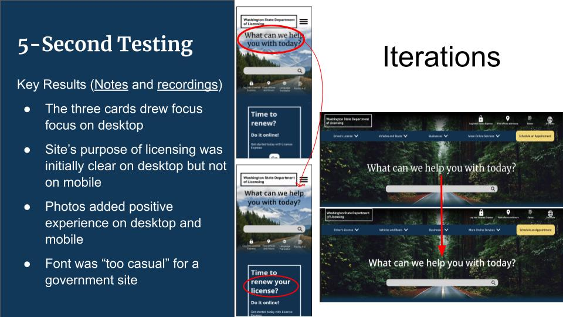

This project was a 4-week redesign of government website. My group of three started with research, assessed the usability of the current site, then started prototyping our redesign. We also spoke with the current webmaster to learn about the unique challenges their site faces.
We interviewed users form a wide range of demographics, including both younger and older users, first-time drivers, and more experienced drivers, in order to ensure that our page was approachable for anyone who might need it..
The problem with the current page was a primarily the business and dated look of the home page. Users were quickly overwhelmed and unsure on how to proceed. All the content was there, so we wanted to help users find a way to navigate this valuable information without having to call or go wait in line at the office.
I tested my wire frames and prototypes regularly to ensure that I stayed true to the users needs. User feedback was positive, and highlighted areas to simplify further.
The final prototype offered an updated look and a user-friendly interface, all while keeping the valuable content from the original site. Users were excited to see Washington imagery and attention-grabbing call-to-action buttons.